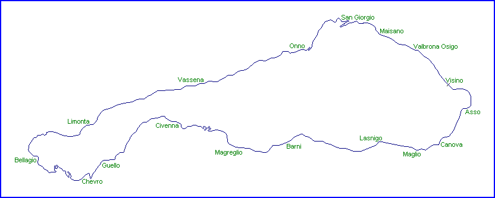

| Length | 22.680 Miles // 36.500 km |
| Direction | Anticlockwise |
Contact Information |
|
| Address | The circuit is no longer operational |
| Telephone | |
| Website | |
Lario
Public Road Circuit (1921-1939)

| Length | 22.680 Miles // 36.500 km |
| Direction | Anticlockwise |
Contact Information |
|
| Address | The circuit is no longer operational |
| Telephone | |
| Website | |
racingcircuits.net - Lasted Updated: 27 October 2004 00:04:37 GMT Daylight Time
Data
Sources
Website- "Circuito del Lario e della Valassina";
http://www.circuitodellario.it
email - from Roelard Smit on Wed 11/02/04 18:56